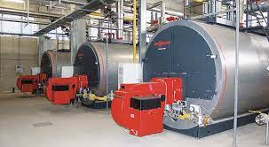
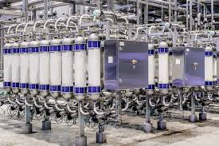
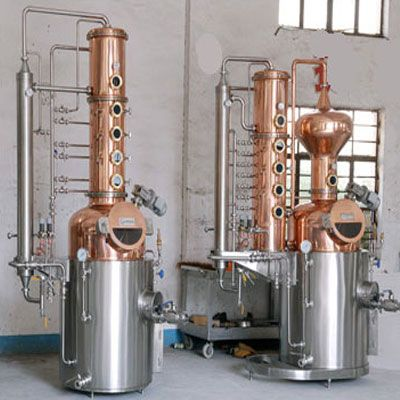
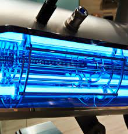
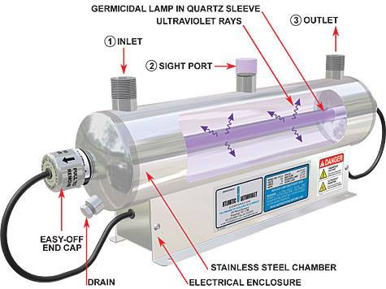
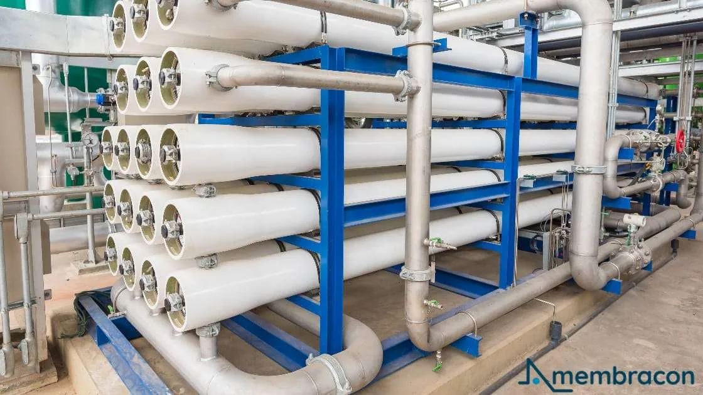
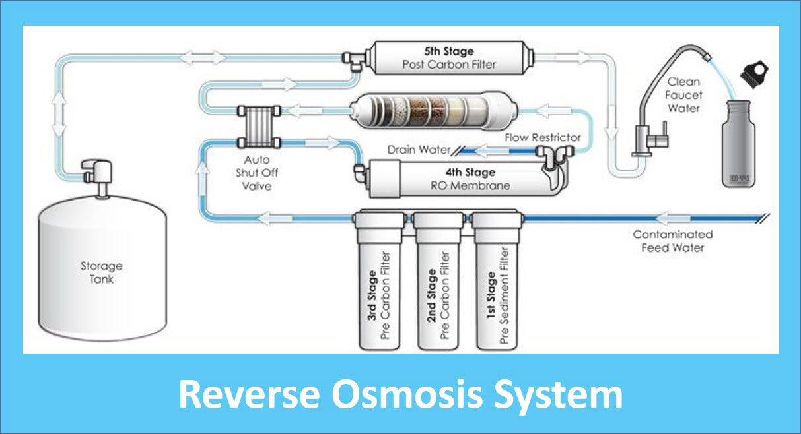

Your trusted source for pure...
At Aqua Mart,We used variety of water purification methods to ensure every drop of water we provide is off the highest quality.From used advanced purification methods and techniques,we guarantee impurities,contaminants,and pollutants is free from that water.
Hear are our purification methods and process
1.Boilling
Boiler Machine
Boilling Process
- Boilling water is a simple and effective method,that involves heating water to it's boilling point.
- Typically water boils around 100degrees celsius(212 degrees Fahrenheight).
- We use this method to kill or inactivates harmfull bacteria and viruses.
- After boiling the water is allowed to cool before being stored in clean, sanitized containers.
- This method we does not use chemicals.
2.Filtaration
Filtaration Machine
Filteration Process
- Cooled boilled water undergo filtration to remove suspended particles, sediment, and larger impurities.
- Filteration can be done various methods such as sand filteration,gravity filteration membrane filtaration and active carbon filteration.
- Among them we use membrane filtaraion system to provide quality products to our customers.
- Membrane filtration system utilizes semi-permeable membranes to purify water by separating contaminants based on size and molecular weight.
- In this stage trapping and removing tiny contaminants like dirt, bacteria, and chemicals in water.
- This process ensures the water becomes clean and safe to drink.
3.Distillation
Distillation Machine
Distillation Process
- In this stage, water is boiled to produce steam, which is then condensed back into liquid form.
- After that steam is collected and cooled in a separate chamber, leaving behind impurities such as minerals, heavy metals, and contaminants.
- Distillation effectively removes dissolved solids, organic compounds, and microorganisms from the water, producing highly purified water.
4.Chlorination
Chlorination system

Chlorination Process
- In this stage we are adding chlorine gas, chlorine compounds, or chloramines to the water to disinfect it.
- The chlorine reacts with organic matter and microbial pathogens present in the water, killing or inactivating them.
- Our company use this process widely used method for treating drinking water and wastewater due to its effectiveness in destroying a wide range of pathogens.

5.UV Treatment
UV Treatment Machine
UV Treatment Process
- This helps utilizes ultraviolet (UV) light to disinfect water by disrupting the DNA of microorganisms.
- Water passes through a UV chamber where it is exposed to UV light of a specific wavelength.
- The UV light penetrates the cells of bacteria, viruses, and other pathogens, preventing them from reproducing and rendering them harmless.
- UV treatment is a chemical-free and environmentally friendly method of water disinfection 
6.Reverse Osmosis
Reverse Osmosis Machine
Reverse Osmosis Process
- This step is a filtration process that uses a semi-permeable membrane to remove dissolved solids, salts, and contaminants from water.
- Water is forced through the RO membrane at high pressure, while impurities are retained on one side of the membrane.
- The purified water passes through the membrane, leaving behind concentrated brine or waste water.
- RO is effective in removing a wide range of contaminants, including heavy metals, dissolved solids, and microbiological pathogens. 